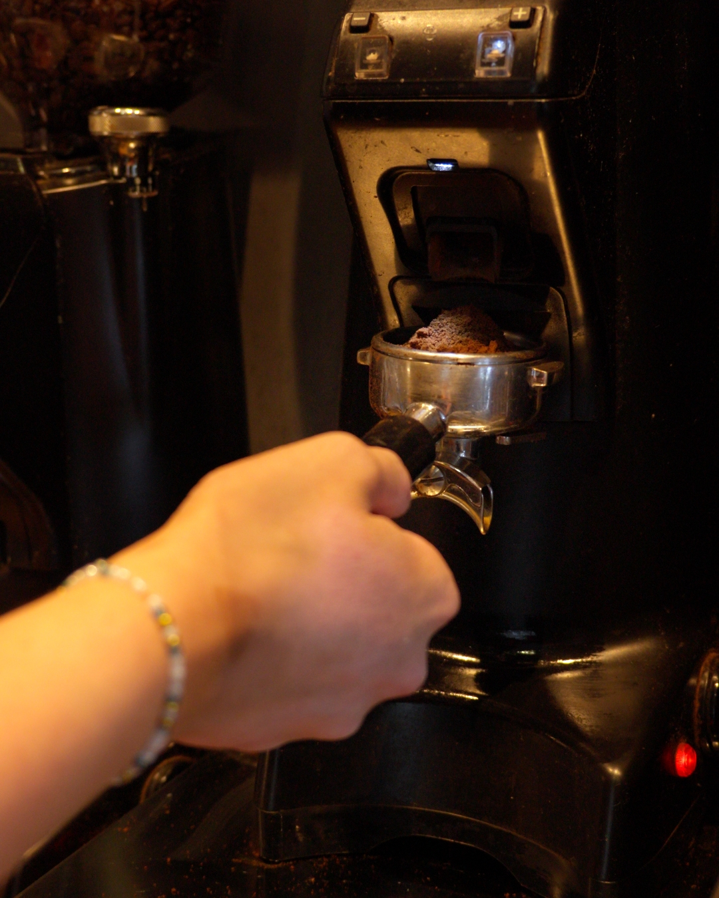

Social Media für Unternehmen: Warum es 2026 unverzichtbar ist

Social Media ist längst kein netter Zusatz mehr, sondern ein fester Bestandteil moderner Unternehmenskommunikation. Trotzdem unterschätzen viele Unternehmen – besonders im Mittelstand – wie viel Reichweite, Vertrauen und Umsatz in Plattformen wie Instagram, TikTok, YouTube und LinkedIn steckt. In diesem Guide erfährst du, warum Social Media für Unternehmen heute unverzichtbar ist, welche Plattform zu dir passt, welche Fehler du vermeiden solltest und wie du in fünf Schritten startest.
Das Wichtigste in Kürze
- Über 80 % der Menschen in Deutschland nutzen täglich Social Media – deine Kunden sind längst dort.
- Social Media baut vor allem Vertrauen auf – der Verkauf folgt daraus, nicht umgekehrt.
- Guter organischer Content erreicht ohne Werbebudget tausende Menschen und ist meist günstiger als klassische Werbung.
- Auch Recruiting funktioniert über Social Media – oft dort, wo klassische Stellenanzeigen längst versagen.
- Der wichtigste Zeitpunkt zu starten ist jetzt: Reichweite und Vertrauen brauchen Vorlauf.
Was bedeutet Social Media für Unternehmen?
Social Media Marketing für Unternehmen bedeutet weit mehr, als hin und wieder ein Foto zu posten. Es geht darum, mit einer klaren Strategie regelmäßig Inhalte zu veröffentlichen, die deine Zielgruppe wirklich interessieren – und daraus messbare Ergebnisse zu erzielen: mehr Bekanntheit, mehr Vertrauen, mehr Anfragen und mehr Bewerbungen.
Der entscheidende Unterschied zu klassischer Werbung: Auf Social Media unterbrichst du deine Zielgruppe nicht, sondern lieferst ihr einen Grund, dir freiwillig zu folgen. Du wirst vom lauten Werbebanner zum Gesicht, das man kennt und dem man vertraut. Genau das macht den Kanal so kraftvoll – und für viele Unternehmen so unterschätzt.
Zahlen & Fakten: die Ausgangslage 2026
Bevor wir zu den Gründen kommen, ein kurzer Blick auf die Realität. Social Media ist kein Nischenkanal mehr, sondern der Ort, an dem sich ein Großteil der Aufmerksamkeit deiner Kunden abspielt:
Anders gesagt: Deine Kunden sind bereits da und verbringen dort täglich viel Zeit. Die einzige offene Frage ist, ob sie in dieser Zeit dich sehen – oder deine Konkurrenz.
7 Gründe, warum Social Media für Unternehmen unverzichtbar ist
1. Ihre Kunden sind bereits dort
Egal ob deine Zielgruppe 18 oder 55 Jahre alt ist – sie scrollt durch Instagram, schaut YouTube-Videos oder entdeckt Neues auf TikTok. Wenn du dort nicht sichtbar bist, überlässt du das Feld denen, die es sind. Das heißt nicht, dass du auf jeder Plattform aktiv sein musst. Aber dort präsent zu sein, wo deine Kunden ihre Zeit verbringen, ist der erste Schritt zu mehr Sichtbarkeit.
2. Vertrauen entsteht durch Sichtbarkeit
Menschen kaufen von Unternehmen, denen sie vertrauen – und Vertrauen entsteht durch regelmäßige, echte Sichtbarkeit. Beim ersten Kontakt kauft kaum jemand sofort. Aber wer dich immer wieder im Feed sieht – authentische Einblicke, echte Menschen, ehrliche Geschichten –, bei dem baust du Vertrauen auf. Und genau dieses Vertrauen entscheidet später über den Auftrag.
Social Media ist nicht der Ort für den schnellen Verkauf. Es ist der Ort, an dem langfristiges Vertrauen entsteht – und daraus folgt der Verkauf fast von allein.
3. Content-Marketing ist günstiger als klassische Werbung
Ein einziges gut produziertes Video kann auf drei bis fünf Plattformen ausgespielt werden und organisch tausende Menschen erreichen – ohne Werbebudget. Vergleiche das mit einer Zeitungsanzeige oder einem Radiospot, der einmal läuft und dann verschwunden ist. Professionelle Content-Produktion kostet natürlich Geld, aber das Verhältnis aus Investition und Reichweite ist bei Social Media deutlich besser als bei den meisten klassischen Werbeformen.
4. Recruiting über Social Media funktioniert
Fachkräftemangel ist in vielen Branchen das größte Problem. Klassische Stellenanzeigen werden teurer und bringen immer weniger Bewerbungen. Authentischer Content, der den Arbeitsalltag zeigt, spricht potenzielle Mitarbeiter direkt an – oft Menschen, die gar nicht aktiv suchen, aber durch einen spannenden Einblick neugierig werden. Mit dieser Strategie haben wir für Kunden nachweislich Bewerbungen generiert, die über keinen anderen Kanal gekommen wären.
5. Messbare Ergebnisse statt Bauchgefühl
Anders als bei Plakat oder Flyer siehst du bei Social Media genau, was funktioniert: Reichweite, Interaktionen, Profilbesuche, Klicks, Anfragen. Diese Daten sind Gold wert, weil du deine Inhalte laufend verbessern kannst. Du investierst nicht ins Blaue, sondern triffst Entscheidungen auf Basis echter Zahlen – und machst jeden Monat mehr von dem, was nachweislich wirkt.
6. Direkter Draht zu deiner Zielgruppe
Kommentare, Nachrichten, Umfragen: Social Media ist keine Einbahnstraße. Du bekommst direktes Feedback, beantwortest Fragen in Echtzeit und lernst deine Kunden besser kennen als über fast jeden anderen Kanal. Diese Nähe schafft Bindung – und aus Followern werden Fans, die dich weiterempfehlen.
7. Wer jetzt nicht anfängt, verliert
Die Algorithmen belohnen Regelmäßigkeit und Qualität. Unternehmen, die heute mit dem Aufbau ihrer Social-Media-Präsenz beginnen, haben in einem Jahr einen enormen Vorsprung vor denen, die noch warten. Jeder Tag ohne Content ist ein Tag, an dem deine Konkurrenz Reichweite aufbaut und du nicht. Ein durchdachter Start auf ein oder zwei Plattformen mit professionellem Content reicht – und kann dein Unternehmen nachhaltig verändern.
Welche Plattform passt zu meinem Unternehmen?
Du musst nicht überall sein. Viel wichtiger ist, dort richtig gut zu sein, wo deine Zielgruppe unterwegs ist. Ein kurzer Überblick:
- Instagram – der Allrounder für Reichweite, Marke und Community. Ideal für fast jedes Unternehmen, das mit Bild- und Videoinhalten Vertrauen aufbauen will.
- TikTok – enorme organische Reichweite, besonders bei jüngeren Zielgruppen. Perfekt für authentische, unterhaltsame Kurzvideos.
- YouTube – die Plattform für tiefergehende Inhalte und langfristige Auffindbarkeit. YouTube-Videos werden auch über Google gefunden und wirken jahrelang nach.
- LinkedIn – der Kanal für B2B, Employer Branding und Fachkräfte. Stark, wenn deine Kunden oder Wunsch-Mitarbeiter selbst Unternehmen oder Entscheider sind.
- Facebook – weiterhin relevant für lokale Zielgruppen und ältere Nutzer, gut in Kombination mit gezielter Werbung.
Unser Rat: Starte mit ein bis zwei Plattformen, die zu deiner Zielgruppe passen, und baue sie konsequent aus – statt dich auf fünf Kanälen zu verzetteln.
Die 5 häufigsten Fehler
Wenn Social Media nicht funktioniert, liegt es fast immer an einem dieser Punkte:
- Zu verkäuflich denken. Wer nur Angebote postet, wird ignoriert. Liefere zuerst Mehrwert, Unterhaltung oder Einblicke – der Verkauf folgt.
- Unregelmäßigkeit. Drei Wochen Feuer, dann Funkstille. Der Algorithmus und deine Community belohnen Konstanz, nicht Strohfeuer.
- Keine Strategie. Ohne Ziel und roten Faden wird Content beliebig. Erst die Strategie, dann die Kamera.
- Schlechte Qualität. Verwackelte Handyvideos ohne Ton oder Schnitt schaden mehr, als sie nutzen. Qualität ist ein Vertrauenssignal.
- Zu früh aufgeben. Reichweite braucht Vorlauf. Wer nach vier Wochen aufhört, sieht nie die Ergebnisse, die ab etwa drei Monaten kommen – oft auch früher.
In 5 Schritten starten
Du willst loslegen? So sieht ein sauberer Start aus:
- Ziel definieren. Mehr Bekanntheit, mehr Anfragen oder mehr Bewerbungen? Dein Ziel bestimmt alles Weitere.
- Zielgruppe & Plattform wählen. Wo ist deine Zielgruppe unterwegs – und welche ein bis zwei Plattformen passen dazu?
- Content-Konzept erstellen. Welche Themen, Formate und Botschaften? Ein einfacher Redaktionsplan gibt dir Struktur.
- Professionell produzieren. Guter Content aus einem Drehtag lässt sich in viele Reels, Shorts und Posts verwandeln.
- Veröffentlichen, messen, verbessern. Schau auf die Zahlen, lerne daraus und mach mehr von dem, was funktioniert.
Wenn du dir dabei Unterstützung wünschst: Genau das ist unsere Arbeit. Wirf gern einen Blick auf unsere Leistungen oder sieh dir an, welche Ergebnisse wir für Kunden erzielt haben.
Fazit
Social Media ist kein Nice-to-have mehr – es ist ein Muss. Deine Kunden sind längst dort, Vertrauen entsteht durch Sichtbarkeit, und guter Content ist günstiger und wirksamer als klassische Werbung. Die Frage ist nicht ob dein Unternehmen auf Social Media aktiv sein sollte, sondern wie schnell du damit startest. Je früher, desto größer dein Vorsprung.
Häufige Fragen (FAQ)
Fast jedes Unternehmen profitiert – vom lokalen Handwerksbetrieb bis zum B2B-Dienstleister. Entscheidend ist nicht, ob, sondern welche Plattform und Strategie zu deinen Zielen und deiner Zielgruppe passen.
Das hängt von deiner Zielgruppe ab. Instagram und TikTok eignen sich für Reichweite und jüngere Zielgruppen, YouTube für tiefergehende Inhalte, LinkedIn für B2B. Meist reicht es, mit ein bis zwei Plattformen richtig zu starten.
Die Kosten hängen von Umfang und Zielen ab – von einzelner Content-Produktion bis zur laufenden Betreuung. Mehr dazu in unserem Artikel Was kostet Social Media Marketing?. Wichtiger als der Preis ist das Verhältnis aus Investition und Ergebnis.
Erste Ergebnisse wie steigende Reichweite zeigen sich oft schon nach wenigen Wochen. Nachhaltiger Aufbau von Vertrauen, Community und planbaren Anfragen zeigt sich meist ab etwa drei Monaten konsequenter Arbeit – je nach Einsatz auch früher. Bei unserem Kunden EMPLOYA kam die erste Millionen-Reichweite bereits nach dem zweiten Drehtag.
Beides ist möglich. Selbst machen spart Budget, kostet aber Zeit und Know-how. Eine Agentur bringt Strategie, Produktion und Erfahrung. Wir haben das ausführlich verglichen: Social Media selber machen oder Agentur?
Bereit für deinen Wendepunkt?
Lass uns in einem kostenlosen Erstgespräch herausfinden, welche Social-Media-Strategie zu deinem Unternehmen passt.
Kostenloses Erstgespräch sichern →